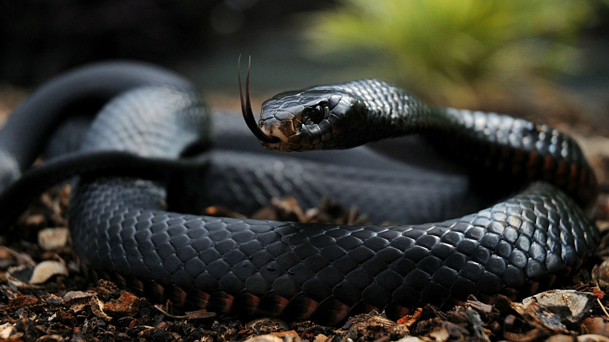

Trimeresurus sabahi
Trimeresurus sabahi, commonly known as the Sabah pit viper[1] or Sabah bamboo pitviper,[3][4] is a venomous pitviper species.[3]
If defined narrowly, it is endemic to the island of Borneo.[1] If defined more broadly, it consists of five subspecies found in Southeast Asia.[3]

Dendroaspis polylepis
The black mamba is a species of highly venomous snake belonging to the family Elapidae. It is native to parts of sub-Saharan Africa. First formally described by Albert Günther in 1864, it is the second-longest venomous snake after the king cobra; mature specimens generally exceed 2 m and commonly grow to 3 m.